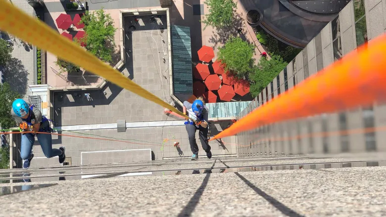

ჩაკეტილი სახლის კარის გაღება
სახლის, ბინის, ოფისის ან საწყობის კარის გახსნა პროფესიონალურად. საჭიროების შემთხვევაში გასაღების დამზადებაც.
დეტალურად
თუ კარი ჩაიკეტა, გასაღები შიგნით დარჩა და ბინაში ჩვეულებრივი გზით შესვლა შეუძლებელია, DoorGO საჭიროების შემთხვევაში ახორციელებს სიმაღლიდან ბინაში შესვლას თოკით. მომსახურება სრულდება შემთხვევის წინასწარი შეფასებით, უსაფრთხოების წესების დაცვით და შეთანხმებული პირობებით. დაგვირეკეთ ნომერზე 579 134 034.
ეს სერვისი გამოიყენება მაშინ, როცა კარის გაღება მხოლოდ სიმაღლიდან ჩასვლით ან ფანჯრიდან/აივნიდან უსაფრთხო წვდომით არის შესაძლებელი. ყველა შემთხვევა ფასდება ინდივიდუალურად, რათა სამუშაო შესრულდეს მაქსიმალურად უსაფრთხოდ და ორგანიზებულად.
სიმაღლიდან ბინაში შესვლის მომსახურება ტარდება მხოლოდ მაშინ, როცა გარემო და წვდომა ამის საშუალებას იძლევა. ადგილზე ან სატელეფონო კონსულტაციით ვაზუსტებთ ფასადს, ფანჯრის/აივნის მდებარეობას, სართულს და სხვა დეტალებს. საჭიროების შემთხვევაში მომსახურების დაწყებამდე დამატებით დაგითანხმებთ პირობებს.
მომსახურება ხელმისაწვდომია თბილისში და შეთანხმებით საქართველოს სხვა ქალაქებსა და რეგიონებში. გამოძახების დრო და საბოლოო ღირებულება ზუსტდება ლოკაციისა და შემთხვევის მიხედვით.
არა. მომსახურება სრულდება მხოლოდ წინასწარი შეფასების შემდეგ, როცა სამუშაოს შესრულება უსაფრთხოდ არის შესაძლებელი.
ფასზე გავლენას ახდენს სართული, ფასადის ტიპი, წვდომის სირთულე, ლოკაცია და საჭირო აღჭურვილობა.
დიახ, შეთანხმებით ვემსახურებით საქართველოს სხვა ქალაქებსა და რეგიონებსაც.
ცხელი ხაზი: 579 134 034 24/7. მომსახურება: თბილისი და საქართველოს მასშტაბით.
სახლის, ბინის, ოფისის ან საწყობის კარის გახსნა პროფესიონალურად. საჭიროების შემთხვევაში გასაღების დამზადებაც.
დეტალურად

მანქანის კარი ჩაიკეტა, გასაღები შიგნით დარჩა ან ფობი არ მუშაობს? ვხსნით მანქანას დაზიანების გარეშე.
დეტალურად
ცილინდრის შეცვლა, მონტაჟი, რეგულირება და უსაფრთხოების განახლება ხარისხიანად.
დეტალურადთუ ბინაში წვდომა მხოლოდ სიმაღლიდან არის შესაძლებელი, ვახორციელებთ თოკით ჩასვლას/შესვლას პროფესიონალურად და წინასწარი შეფასებით.
დეტალურად